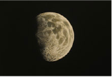

taking measure of history
Abraham Lincoln Presidential Library and Museum, Springfield, Illinois
February 8 - May 17, 2009
Union League Club, Chicago, Illinois
June 17 - July 31, 2009
Perimeter Gallery, Chicago A Search for Heroes, Lincoln and the Illinois Landscape
March 14 - April 25, 2003
A great portrait of a hero might be the last photo of Abraham Lincoln by Alexander Gardner. Gardner when photographing the President, accidentally damaged the plate and the resulting image rendered a crack through Lincoln's head. The line became almost prophetic in its foreshadowing of events to come in the month that followed. What an odd occurrence, in
south of the tennessee,
remains of the campaign
remains of the campaign
Marcia Wood Gallery, Atlanta
January 28 - February 26, 2005
american gothic,
past imperfect
past imperfect
Margaret Thatcher Projects, New York
April 6 - May 13, 2006
In 1863, William T. Sherman marched on Atlanta in what would be a brutal campaign to the sea. One year after the war in 1866, George Barnard photographed the approach and documented the sites. Limited equipment required that he 'construct' his cleaned up views in the studio for a sense of 'realism.' In 2004, I traced the campaign and re-photographed the sites. This time however,

improvisation
Perimeter Gallery, Chicago
January 6 - February 4, 2006
Abstract painting in the twentieth century drew great inspiration from music; particularly improvisational jazz. If painting was to survive, the critic Charles Caffin stated, "it must take on something of the quality which is the essence of music - the abstract." Modernism challenged art to explore boundaries beyond the conventions of representation or symbolism. The surface was no longer a mannered statement but a living entity that demanded more from the
voyages of discovery, from
the earth to the moon
the earth to the moon
Perimeter Gallery, New York April 22 - May 27, 2004
The Moon is both a familiar and an extraordinary place difficult to apprehend. It is a collective vision situated between imagery and fantasy, poetry and science. When we look into the universe astronomers tell us we are literally looking back into our past, into the origins of all things and when space began. The light reflected is actually the light of memory, of history, or of events